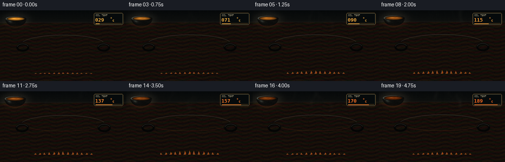
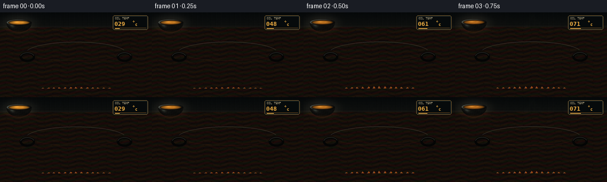
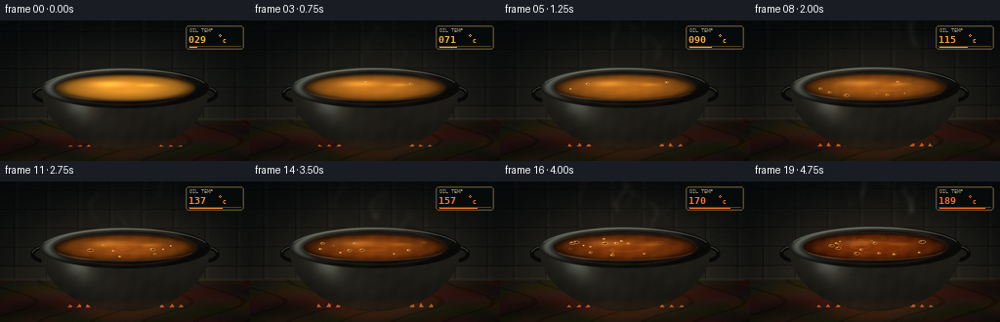
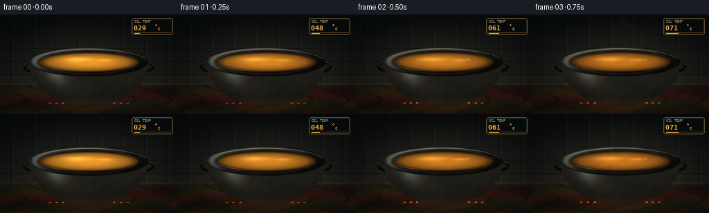

CODING AGENTS AS PIXEL WORLD MODELS
traex/DeepSeek-V4.1-Flash · phygen_110
点击播放 · 原生 RGB 像素
逐轮保存的候选
回放视频、检查图与代码变化。
每份候选均可单独播放。实际图片检查记录在下方工具轨迹中。
候选 01播放与检查图
点击播放 · 原生 RGB 像素


展开代码变化
--- 上一保存版本
+++ 本次保存版本
@@ -0,0 +1,465 @@
+from pathlib import Path
+import math
+import random
+
+import numpy as np
+from PIL import Image, ImageDraw, ImageFilter, ImageFont
+
+import artifact_io
+
+
+CASE_DIR = Path(__file__).resolve().parent
+W, H = 256, 144
+N, FPS = 20, 4.0
+SS = 4
+RW, RH = W * SS, H * SS
+
+
+def smoothstep(a, b, x):
+ t = np.clip((x - a) / (b - a), 0.0, 1.0)
+ return t * t * (3.0 - 2.0 * t)
+
+
+def lerp(a, b, t):
+ return a + (b - a) * t
+
+
+def rgb_lerp(a, b, t):
+ return tuple(int(round(lerp(a[i], b[i], t))) for i in range(3))
+
+
+def ellipse_mask(cx, cy, rx, ry):
+ return ((X - cx) / rx) ** 2 + ((Y - cy) / ry) ** 2 <= 1.0
+
+
+def paste_masked(base, layer, mask):
+ alpha = mask.astype(np.float32)
+ out = base.astype(np.float32)
+ out[mask] = out[mask] * (1.0 - alpha[mask, None]) + layer[mask] * alpha[mask, None]
+ return np.clip(out, 0, 255).astype(np.uint8)
+
+
+def make_background():
+ yy, xx = Y, X
+ top = np.array([9, 14, 17], dtype=np.float32)
+ bottom = np.array([25, 28, 27], dtype=np.float32)
+ v = np.clip(yy / 103.0, 0, 1)[..., None]
+ bg = top + (bottom - top) * v
+
+ wall = yy < 101.0
+ tile_x = 32.0
+ tile_y = 19.0
+ gx = np.mod(xx + 16.0, tile_x)
+ gy = np.mod(yy + 8.0, tile_y)
+ mortar = wall & (((gx < 1.0) | (gy < 1.0)))
+ tile_light = wall & (((gx > 2.0) & (gx < 5.0) & (gy > 2.0)))
+ bg[mortar] *= 0.48
+ bg[tile_light] += np.array([3.0, 4.0, 4.0], dtype=np.float32)
+
+ # A restrained backsplash pattern keeps the scene from reading as a flat backdrop.
+ bevel = wall & ((gx < 2.2) | (gy < 2.2))
+ bg[bevel] += np.array([2.0, 2.5, 2.0], dtype=np.float32)
+ lower_wall = wall & (yy > 89.0)
+ bg[lower_wall] += np.array([5.0, 4.0, 3.0], dtype=np.float32)
+
+ counter = yy >= 101.0
+ wood = np.stack(
+ [
+ 36.0 + 11.0 * np.sin(yy * 0.21 + np.sin(xx * 0.038) * 2.2),
+ 25.0 + 7.0 * np.sin(yy * 0.18 + xx * 0.015),
+ 18.0 + 4.0 * np.sin(xx * 0.07 + yy * 0.3),
+ ],
+ axis=-1,
+ )
+ grain = (np.sin(xx * 0.12 + np.sin(yy * 0.14) * 3.0) > 0.94) & counter
+ wood[grain] *= 0.72
+ bg[counter] = wood[counter]
+ edge = (yy >= 100.0) & (yy < 102.5)
+ bg[edge] += np.array([13.0, 10.0, 7.0])
+
+ # Soft radial room illumination centered behind the cauldron.
+ radial = np.exp(-(((xx - 128.0) / 104.0) ** 2 + ((yy - 75.0) / 72.0) ** 2))
+ bg += radial[..., None] * np.array([10.0, 7.0, 3.5])
+ return np.clip(bg, 0, 255)
+
+
+def make_pot():
+ u = np.clip((Y - 69.0) / 64.0, 0.0, 1.0)
+ half = 86.0 * np.sqrt(np.clip(1.0 - u * u, 0.0, 1.0))
+ body_mask = (Y >= 68.5) & (Y <= 133.0) & (np.abs(X - 128.0) <= half)
+ q = (X - 128.0) / np.maximum(half, 1.0)
+
+ # Wrought-iron body with a broad cool highlight and warm firelight at the foot.
+ tone = 0.72 + 0.20 * np.exp(-((q + 0.42) / 0.55) ** 2)
+ tone += 0.11 * np.exp(-((q - 0.72) / 0.34) ** 2)
+ tone *= 0.82 + 0.18 * (1.0 - u)
+ base = np.zeros((RH, RW, 3), dtype=np.float32)
+ base[..., 0] = 18.0 * tone
+ base[..., 1] = 19.0 * tone
+ base[..., 2] = 18.0 * tone
+ spec = 64.0 * np.exp(-((q + 0.58) / 0.16) ** 2 - ((u - 0.22) / 0.24) ** 2)
+ base += spec[..., None] * np.array([0.62, 0.73, 0.72])
+ foot = 19.0 * np.exp(-((u - 0.94) / 0.10) ** 2)
+ base += foot[..., None] * np.array([1.0, 0.45, 0.12])
+ texture = (
+ np.sin(X * 0.21 + Y * 0.33)
+ + np.sin(X * 0.067 - Y * 0.19 + 1.7)
+ + np.sin(X * 0.43 + Y * 0.09)
+ ) / 3.0
+ base += (texture * 2.3 * body_mask)[..., None]
+ return body_mask, base
+
+
+def make_masks():
+ outer = ellipse_mask(128.0, 69.0, 86.0, 21.0)
+ inner = ellipse_mask(128.0, 69.0, 72.0, 14.5)
+ rim = outer & ~inner
+ oil = ellipse_mask(128.0, 69.0, 71.3, 13.7)
+ return outer, inner, rim, oil
+
+
+def make_static_layers():
+ bg = make_background()
+ body_mask, body_rgb = make_pot()
+ outer, inner, rim, oil = make_masks()
+ d = np.sqrt(((X - 128.0) / 86.0) ** 2 + ((Y - 69.0) / 21.0) ** 2)
+ ang = np.arctan2((Y - 69.0) / 21.0, (X - 128.0) / 86.0)
+ ring_tone = 0.75 + 0.28 * np.cos(ang + 2.35)
+ rim_rgb = np.zeros((RH, RW, 3), dtype=np.float32)
+ rim_rgb[..., 0] = 22.0 * ring_tone
+ rim_rgb[..., 1] = 23.0 * ring_tone
+ rim_rgb[..., 2] = 22.0 * ring_tone
+ top_spec = 95.0 * np.exp(-((d - 0.91) / 0.055) ** 2) * smoothstep(-0.3, 0.9, np.cos(ang + 2.35))
+ rim_rgb += top_spec[..., None] * np.array([0.72, 0.79, 0.75])
+ inner_shadow = 24.0 * np.exp(-((d - 0.81) / 0.035) ** 2)
+ rim_rgb += inner_shadow[..., None] * np.array([1.0, 0.48, 0.16])
+ rim_rgb += (np.sin(X * 0.16 + Y * 0.31) * 1.8)[..., None]
+ return bg, body_mask, body_rgb, outer, inner, rim, rim_rgb, oil
+
+
+def make_seeds():
+ rng = random.Random(2207)
+ bubbles = []
+ for i in range(58):
+ u = (i + rng.random()) / 58.0
+ birth = 0.06 + 4.72 * (u ** 0.57)
+ angle = rng.random() * math.tau
+ rad = math.sqrt(rng.random()) * 0.86
+ x = 128.0 + 66.5 * rad * math.cos(angle)
+ y = 69.0 + 11.8 * rad * math.sin(angle)
+ size = 0.65 + 2.05 * rng.random()
+ life = 0.36 + 0.76 * rng.random()
+ bubbles.append((birth, life, x, y, size, rng.random()))
+ bubbles.sort()
+
+ wisps = []
+ for i in range(8):
+ wisps.append(
+ {
+ "x": 91.0 + 11.0 * i + rng.uniform(-3.0, 3.0),
+ "offset": rng.random(),
+ "drift": rng.uniform(-7.0, 7.0),
+ "phase": rng.random() * math.tau,
+ "width": rng.uniform(1.8, 3.8),
+ }
+ )
+ return bubbles, wisps
+
+
+def draw_glow(frame, temp_factor):
+ arr = frame.astype(np.float32)
+ radial = np.exp(-(((X - 128.0) / 97.0) ** 2 + ((Y - 82.0) / 55.0) ** 2))
+ fire = np.exp(-(((X - 128.0) / 64.0) ** 2 + ((Y - 128.0) / 21.0) ** 2))
+ arr += radial[..., None] * np.array([13.0, 6.2, 2.0]) * temp_factor
+ arr += fire[..., None] * np.array([23.0, 8.0, 1.2]) * temp_factor
+ return np.clip(arr, 0, 255).astype(np.uint8)
+
+
+def draw_burner(base, t, heat):
+ draw = ImageDraw.Draw(base, "RGBA")
+ cx, y = 128.0, 129.0
+ flicker = 0.74 + 0.26 * math.sin(t * 17.0) + 0.12 * math.sin(t * 31.0 + 1.2)
+ flicker = max(0.45, flicker)
+ strength = 0.26 + 0.74 * heat
+ for i in range(13):
+ x = 72.0 + i * 9.33
+ dx = (x - cx) / 64.0
+ if abs(dx) > 1.0:
+ continue
+ h = (4.0 + 8.0 * (1.0 - abs(dx))) * strength * flicker
+ sway = 1.1 * math.sin(t * 14.0 + i * 1.7)
+ alpha = int(85 + 100 * strength)
+ points = [
+ ((x - 2.1) * SS, y * SS),
+ ((x + sway - 0.4) * SS, (y - h * 0.55) * SS),
+ ((x + sway * 0.3) * SS, (y - h) * SS),
+ ((x + 2.0 + sway) * SS, (y - h * 0.42) * SS),
+ ((x + 2.4) * SS, y * SS),
+ ]
+ draw.polygon(points, fill=(255, 116, 24, alpha))
+ draw.line(
+ [((x - 1.0) * SS, y * SS), ((x + sway * 0.3) * SS, (y - h * 0.67) * SS)],
+ fill=(116, 190, 255, int(100 + 95 * strength)),
+ width=max(1, int(0.65 * SS)),
+ )
+
+
+def draw_handles(base):
+ draw = ImageDraw.Draw(base, "RGBA")
+ for cx in (46.0, 210.0):
+ draw.ellipse(
+ ((cx - 13.0) * SS, 67.0 * SS, (cx + 13.0) * SS, 84.0 * SS),
+ outline=(8, 9, 9, 255),
+ width=int(4.1 * SS),
+ )
+ draw.arc(
+ ((cx - 12.0) * SS, 68.0 * SS, (cx + 12.0) * SS, 83.0 * SS),
+ 192,
+ 342,
+ fill=(66, 68, 64, 235),
+ width=int(1.1 * SS),
+ )
+
+
+def draw_oil(base, oil_mask, t, heat):
+ d = np.sqrt(((X - 128.0) / 71.3) ** 2 + ((Y - 69.0) / 13.7) ** 2)
+ early = np.array([201, 132, 40], dtype=np.float32)
+ late = np.array([101, 40, 8], dtype=np.float32)
+ colour = early + (late - early) * (heat ** 0.82)
+ radial = np.clip(1.12 - 0.62 * d ** 1.7, 0.30, 1.05)
+ oil = colour[None, None, :] * radial[..., None]
+
+ # Overhead window reflection, softened and stretched by the oil surface.
+ spec1 = np.exp(-(((X - 111.0) / 19.0) ** 2 + ((Y - 65.0) / 3.2) ** 2))
+ spec2 = np.exp(-(((X - 153.0) / 10.0) ** 2 + ((Y - 66.2) / 1.8) ** 2))
+ oil += spec1[..., None] * np.array([57.0, 49.0, 27.0]) * (1.05 - 0.35 * heat)
+ oil += spec2[..., None] * np.array([44.0, 36.0, 19.0]) * (1.0 - 0.25 * heat)
+
+ # Slow convection bands become more pronounced as the oil heats.
+ wave = (
+ np.sin((X - 128.0) * 0.22 + t * 5.4 + (Y - 69.0) * 0.42)
+ + 0.55 * np.sin((X - 128.0) * 0.51 - t * 8.0)
+ )
+ oil += (wave * (1.2 + 3.8 * heat))[..., None] * np.array([1.0, 0.55, 0.18])
+
+ edge_shadow = np.clip((d - 0.80) / 0.22, 0, 1) ** 1.5
+ oil *= (1.0 - 0.58 * edge_shadow)[..., None]
+ base_arr = np.asarray(base).astype(np.float32)
+ base_arr[oil_mask] = oil[oil_mask]
+ return Image.fromarray(np.clip(base_arr, 0, 255).astype(np.uint8), "RGB")
+
+
+def draw_bubbles(base, oil_mask, t, heat, bubbles):
+ layer = Image.new("RGBA", (RW, RH), (0, 0, 0, 0))
+ draw = ImageDraw.Draw(layer, "RGBA")
+
+ # Broad, low-contrast heat rings traveling across the liquid.
+ for i in range(3):
+ age = (t * (0.23 + i * 0.018) + i * 0.34) % 1.0
+ rx = (6.0 + age * 44.0) * SS
+ ry = rx * 0.20
+ alpha = int((1.0 - age) * (12 + 35 * heat))
+ cx = (113.0 + i * 13.0) * SS
+ cy = (69.0 + i * 0.8) * SS
+ draw.ellipse((cx - rx, cy - ry, cx + rx, cy + ry), outline=(224, 155, 65, alpha), width=SS)
+
+ for birth, life, x, y, size, phase in bubbles:
+ age = (t - birth) / life
+ if age < 0.0 or age > 1.35:
+ continue
+ if age <= 1.0:
+ grow = math.sin(math.pi * min(age, 1.0) * 0.72) ** 0.55
+ r = size * (0.26 + 0.95 * grow) * (0.88 + 0.35 * heat)
+ fade = min(1.0, age / 0.10) * min(1.0, (1.02 - age) / 0.16)
+ rx = max(0.55, r)
+ ry = max(0.34, r * 0.44)
+ px, py = x * SS, y * SS
+ draw.ellipse(
+ (px - rx * SS, py - ry * SS, px + rx * SS, py + ry * SS),
+ fill=(46, 24, 7, int(116 * fade)),
+ outline=(242, 177, 74, int(205 * fade)),
+ width=max(1, int(0.62 * SS)),
+ )
+ hx = px - rx * 0.32 * SS
+ hy = py - ry * 0.38 * SS
+ draw.ellipse(
+ (hx - 0.55 * SS, hy - 0.34 * SS, hx + 0.55 * SS, hy + 0.34 * SS),
+ fill=(255, 224, 151, int(225 * fade)),
+ )
+ else:
+ pop_age = (age - 1.0) / 0.35
+ fade = 1.0 - pop_age
+ r = size * (1.15 + 0.8 * pop_age)
+ px, py = x * SS, y * SS
+ draw.ellipse(
+ (px - r * SS, py - r * 0.42 * SS, px + r * SS, py + r * 0.42 * SS),
+ outline=(245, 175, 78, int(95 * fade)),
+ width=max(1, int(0.5 * SS)),
+ )
+
+ # Clip every liquid detail to the cauldron opening.
+ mask = Image.fromarray((oil_mask * 255).astype(np.uint8), "L")
+ layer.putalpha(Image.composite(layer.getchannel("A"), Image.new("L", (RW, RH), 0), mask))
+ return Image.alpha_composite(base.convert("RGBA"), layer).convert("RGB")
+
+
+def draw_steam(base, t, heat, wisps):
+ if heat < 0.20:
+ return base
+ layer = Image.new("RGBA", (RW, RH), (0, 0, 0, 0))
+ draw = ImageDraw.Draw(layer, "RGBA")
+ strength = smoothstep(0.19, 0.82, heat)
+ for i, wisp in enumerate(wisps):
+ age = (t * 0.31 + wisp["offset"]) % 1.0
+ if age < 0.05:
+ continue
+ base_x = wisp["x"]
+ y0 = 65.0
+ y1 = 16.0 - (i % 2) * 3.0
+ y = lerp(y0, y1, age)
+ x = base_x + wisp["drift"] * age + math.sin(age * 7.0 + wisp["phase"]) * (3.0 + 5.0 * age)
+ fade = math.sin(math.pi * min(1.0, age)) ** 0.72
+ alpha = int((13 + 44 * strength) * fade)
+ width = max(1, int(wisp["width"] * SS * (0.7 + 0.5 * age)))
+ points = []
+ for k in range(9):
+ q = k / 8.0
+ py = y - q * (22.0 + 16.0 * age)
+ px = x + math.sin(q * 4.8 + age * 8.0 + wisp["phase"]) * (1.5 + q * 6.0)
+ points.append((px * SS, py * SS))
+ tone = (177, 184, 176) if heat < 0.72 else (149, 143, 130)
+ draw.line(points, fill=(*tone, alpha), width=width, joint="curve")
+ if i % 3 == 0:
+ draw.line(
+ [(px + 2.4 * SS, py) for px, py in points],
+ fill=(224, 219, 199, max(0, alpha // 2)),
+ width=max(1, width // 2),
+ joint="curve",
+ )
+ layer = layer.filter(ImageFilter.GaussianBlur(3.1 * SS))
+ return Image.alpha_composite(base.convert("RGBA"), layer).convert("RGB")
+
+
+def make_vignette():
+ nx = (X - 128.0) / 128.0
+ ny = (Y - 72.0) / 72.0
+ d = np.sqrt(nx * nx * 0.78 + ny * ny)
+ return np.clip(1.0 - 0.40 * smoothstep(0.40, 1.12, d), 0.58, 1.0)
+
+
+def make_grain():
+ rng = np.random.default_rng(914)
+ low = rng.normal(0.0, 1.0, (RH // 8 + 2, RW // 8 + 2)).astype(np.float32)
+ low_img = Image.fromarray(np.clip(128 + low * 22, 0, 255).astype(np.uint8), "L")
+ low_img = low_img.resize((RW, RH), Image.Resampling.BICUBIC)
+ return (np.asarray(low_img).astype(np.float32) - 128.0) / 128.0
+
+
+def temperature(t):
+ return 29.0 + 166.0 * ((t / 5.0) ** 0.72)
+
+
+def add_temperature_display(frame, temp, heat):
+ image = Image.fromarray(frame, "RGB").convert("RGBA")
+ draw = ImageDraw.Draw(image, "RGBA")
+ x0, y0, x1, y1 = 190, 5, 249, 29
+ draw.rounded_rectangle((x0, y0, x1, y1), radius=3, fill=(6, 10, 11, 220), outline=(96, 72, 36, 230))
+ draw.rounded_rectangle((x0 + 1, y0 + 1, x1 - 1, y1 - 1), radius=2, outline=(33, 42, 40, 210))
+ font_dir = Path("/usr/share/fonts/truetype/dejavu")
+ small = ImageFont.truetype(str(font_dir / "DejaVuSansMono.ttf"), 5)
+ bold = ImageFont.truetype(str(font_dir / "DejaVuSansMono-Bold.ttf"), 10)
+ unit = ImageFont.truetype(str(font_dir / "DejaVuSansMono-Bold.ttf"), 6)
+ draw.text((194, 7), "OIL TEMP", font=small, fill=(151, 141, 112, 255))
+ value = f"{int(round(temp)):03d}"
+ colour = rgb_lerp((244, 177, 67), (255, 108, 35), smoothstep(0.25, 1.0, heat))
+ draw.text((193, 13), value, font=bold, fill=(*colour, 255))
+ draw.ellipse((224, 14, 226, 16), outline=(*colour, 255), width=1)
+ draw.text((228, 17), "C", font=unit, fill=(*colour, 255))
+ draw.line((193, 26, 246, 26), fill=(89, 62, 27, 180), width=1)
+ bar_w = int(48 * (temp / 195.0))
+ draw.line((194, 27, 194 + bar_w, 27), fill=(*colour, 230), width=1)
+ return np.asarray(image.convert("RGB"), dtype=np.uint8)
+
+
+def render_frame(index, static, bubbles, wisps, vignette, grain):
+ t = index / FPS
+ temp = temperature(t)
+ heat = np.clip((temp - 29.0) / 166.0, 0.0, 1.0)
+ bg, body_mask, body_rgb, outer, inner, rim, rim_rgb, oil_mask = static
+
+ base = draw_glow(bg, 0.20 + 0.80 * heat)
+ image = Image.fromarray(base, "RGB").convert("RGBA")
+
+ # The burner and handles sit behind the cauldron body.
+ draw_burner(image, t, heat)
+ draw_handles(image)
+
+ arr = np.asarray(image.convert("RGB")).astype(np.float32)
+ arr[body_mask] = body_rgb[body_mask]
+ # Moving highlight travels slowly over the iron shoulder.
+ shoulder = np.exp(-(((X - (92.0 + 5.0 * math.sin(t * 1.5))) / 12.0) ** 2 + ((Y - 81.0) / 17.0) ** 2))
+ shoulder *= body_mask
+ arr += shoulder[..., None] * np.array([11.0, 9.0, 5.0])
+ image = Image.fromarray(np.clip(arr, 0, 255).astype(np.uint8), "RGB")
+
+ arr = np.asarray(image).astype(np.float32)
+ arr[rim] = rim_rgb[rim]
+ image = Image.fromarray(np.clip(arr, 0, 255).astype(np.uint8), "RGB")
+ image = draw_oil(image, oil_mask, t, heat)
+ image = draw_bubbles(image, oil_mask, t, heat, bubbles)
+
+ # Thin reflected fire line on the inner front lip.
+ draw = ImageDraw.Draw(image, "RGBA")
+ draw.arc(
+ (58 * SS, 61 * SS, 198 * SS, 82 * SS),
+ 18,
+ 162,
+ fill=(208, 103, 37, int(55 + 85 * heat)),
+ width=max(1, int(0.7 * SS)),
+ )
+ draw.arc(
+ (43 * SS, 50 * SS, 213 * SS, 89 * SS),
+ 196,
+ 343,
+ fill=(139, 144, 132, 145),
+ width=max(1, int(0.75 * SS)),
+ )
+ image = draw_steam(image, t, heat, wisps)
+
+ arr = np.asarray(image).astype(np.float32)
+ # Color grade, vignette, and fine film grain unify the procedural layers.
+ arr *= np.array([1.025, 0.995, 0.935], dtype=np.float32)
+ arr *= vignette[..., None]
+ arr += grain[..., None] * (1.4 + 1.1 * heat)
+ arr = np.clip(arr, 0, 255)
+
+ zoom = 1.0 + 0.028 * (index / (N - 1))
+ crop_w = int(round(RW / zoom))
+ crop_h = int(round(RH / zoom))
+ cx = int(round(RW * 0.50))
+ cy = int(round(RH * 0.53))
+ left = max(0, min(RW - crop_w, cx - crop_w // 2))
+ top = max(0, min(RH - crop_h, cy - crop_h // 2))
+ crop = Image.fromarray(arr.astype(np.uint8), "RGB").crop((left, top, left + crop_w, top + crop_h))
+ frame = np.asarray(crop.resize((W, H), Image.Resampling.LANCZOS), dtype=np.uint8)
+ return add_temperature_display(frame, temp, heat)
+
+
+def main():
+ global X, Y
+ X, Y = np.meshgrid(np.arange(RW, dtype=np.float32), np.arange(RH, dtype=np.float32))
+ static = make_static_layers()
+ bubbles, wisps = make_seeds()
+ vignette = make_vignette()
+ grain = make_grain()
+ frames = [
+ render_frame(i, static, bubbles, wisps, vignette, grain)
+ for i in range(N)
+ ]
+ frames = np.stack(frames).astype(np.uint8)
+ artifact_io.save(frames, CASE_DIR)
+ print(f"wrote {len(frames)} frames, {frames.shape}, temperature {temperature(0):.0f}->{temperature(5):.0f} C")
+
+
+if __name__ == "__main__":
+ main()
候选 02播放与检查图
点击播放 · 原生 RGB 像素

展开代码变化
--- 上一保存版本
+++ 本次保存版本
@@ -447,7 +447,12 @@
def main():
global X, Y
- X, Y = np.meshgrid(np.arange(RW, dtype=np.float32), np.arange(RH, dtype=np.float32))
+ # Geometry is authored in display pixels; keep it independent of the
+ # supersampling factor while still evaluating on the high-resolution grid.
+ X, Y = np.meshgrid(
+ np.arange(RW, dtype=np.float32) / SS,
+ np.arange(RH, dtype=np.float32) / SS,
+ )
static = make_static_layers()
bubbles, wisps = make_seeds()
vignette = make_vignette()
候选 03播放与检查图
候选 04播放与检查图
点击播放 · 原生 RGB 像素


展开代码变化
--- 上一保存版本
+++ 本次保存版本
@@ -90,14 +90,14 @@
q = (X - 128.0) / np.maximum(half, 1.0)
# Wrought-iron body with a broad cool highlight and warm firelight at the foot.
- tone = 0.72 + 0.20 * np.exp(-((q + 0.42) / 0.55) ** 2)
+ tone = 1.42 + 0.34 * np.exp(-((q + 0.42) / 0.55) ** 2)
tone += 0.11 * np.exp(-((q - 0.72) / 0.34) ** 2)
tone *= 0.82 + 0.18 * (1.0 - u)
base = np.zeros((RH, RW, 3), dtype=np.float32)
- base[..., 0] = 18.0 * tone
- base[..., 1] = 19.0 * tone
+ base[..., 0] = 21.0 * tone
+ base[..., 1] = 20.5 * tone
base[..., 2] = 18.0 * tone
- spec = 64.0 * np.exp(-((q + 0.58) / 0.16) ** 2 - ((u - 0.22) / 0.24) ** 2)
+ spec = 74.0 * np.exp(-((q + 0.58) / 0.16) ** 2 - ((u - 0.22) / 0.24) ** 2)
base += spec[..., None] * np.array([0.62, 0.73, 0.72])
foot = 19.0 * np.exp(-((u - 0.94) / 0.10) ** 2)
base += foot[..., None] * np.array([1.0, 0.45, 0.12])
@@ -223,8 +223,8 @@
def draw_oil(base, oil_mask, t, heat):
d = np.sqrt(((X - 128.0) / 71.3) ** 2 + ((Y - 69.0) / 13.7) ** 2)
- early = np.array([201, 132, 40], dtype=np.float32)
- late = np.array([101, 40, 8], dtype=np.float32)
+ early = np.array([219, 146, 44], dtype=np.float32)
+ late = np.array([112, 43, 7], dtype=np.float32)
colour = early + (late - early) * (heat ** 0.82)
radial = np.clip(1.12 - 0.62 * d ** 1.7, 0.30, 1.05)
oil = colour[None, None, :] * radial[..., None]
@@ -319,7 +319,7 @@
y = lerp(y0, y1, age)
x = base_x + wisp["drift"] * age + math.sin(age * 7.0 + wisp["phase"]) * (3.0 + 5.0 * age)
fade = math.sin(math.pi * min(1.0, age)) ** 0.72
- alpha = int((13 + 44 * strength) * fade)
+ alpha = int((20 + 56 * strength) * fade)
width = max(1, int(wisp["width"] * SS * (0.7 + 0.5 * age)))
points = []
for k in range(9):
@@ -327,7 +327,7 @@
py = y - q * (22.0 + 16.0 * age)
px = x + math.sin(q * 4.8 + age * 8.0 + wisp["phase"]) * (1.5 + q * 6.0)
points.append((px * SS, py * SS))
- tone = (177, 184, 176) if heat < 0.72 else (149, 143, 130)
+ tone = (188, 196, 186) if heat < 0.72 else (163, 157, 143)
draw.line(points, fill=(*tone, alpha), width=width, joint="curve")
if i % 3 == 0:
draw.line(
@@ -336,7 +336,7 @@
width=max(1, width // 2),
joint="curve",
)
- layer = layer.filter(ImageFilter.GaussianBlur(3.1 * SS))
+ layer = layer.filter(ImageFilter.GaussianBlur(2.7 * SS))
return Image.alpha_composite(base.convert("RGBA"), layer).convert("RGB")
@@ -430,7 +430,7 @@
# Color grade, vignette, and fine film grain unify the procedural layers.
arr *= np.array([1.025, 0.995, 0.935], dtype=np.float32)
arr *= vignette[..., None]
- arr += grain[..., None] * (1.4 + 1.1 * heat)
+ arr += grain[..., None] * (1.7 + 1.2 * heat)
arr = np.clip(arr, 0, 255)
zoom = 1.0 + 0.028 * (index / (N - 1))
可观测工具轨迹
实际执行的命令与返回图片。
命令 1exit 0
/bin/bash -c "sed -n '1,240p' prompt.txt"
命令 2exit 0
/bin/bash -c "sed -n '1,320p' GENERATION_RULES.md"
命令 3exit 0
/bin/bash -c 'cat task_spec.json'
命令 4exit 0
/bin/bash -c "printf '%s\\n' '--- files ---'; rg --files -g '"'!*.mp4'"' -g '"'!*.mov'"' -g '"'!*.webm'"' | sed -n '1,240p'; printf '%s\\n' '--- dirs ---'; find . -maxdepth 2 -type d -print | sort | sed -n '1,160p'"
命令 5exit 0
/bin/bash -c "sed -n '1,260p' artifact_io.py"
命令 6exit 0
/bin/bash -c "sed -n '1,300p' player_template.html"
命令 7exit 0
/bin/bash -c "python - <<'PY' import importlib.util for m in ['numpy','PIL','cv2','imageio','scipy']: print(m, bool(importlib.util.find_spec(m))) PY"
命令 8exit 0
/bin/bash -c "fc-match 'DejaVu Sans' | head -1; fc-match 'DejaVu Sans Mono' | head -1"
命令 9exit 0
/bin/bash -c 'command -v chafa || true; command -v viu || true; command -v ffmpeg || true'
命令 10exit 0
/bin/bash -c "python - <<'PY' import cv2 print(cv2.__version__) print(hasattr(cv2,'dnn_superres')) PY"
命令 11exit 0
/bin/bash -c "python - <<'PY' from PIL import Image import numpy as np print(Image.__version__, np.__version__) PY"
命令 12exit 0
/bin/bash -c 'python generate.py'
命令 13exit 0
/bin/bash -c "python - <<'PY'
from PIL import Image
im=Image.open('inspection.png')
print(im.size)
im.crop((0,0,768,330)).resize((1152,495), Image.Resampling.NEAREST).save('.tmp/contact_top.png')
im.crop((0,330,768,660)).resize((1152,495), Image.Resampling.NEAREST).save('.tmp/contact_bottom.png')
# enlarged individual milestone frames
for i in [0,4,9,14,19]:
Image.open(f'frames/{i:02d}.png').resize((1024,576),Image.Resampling.NEAREST).save(f'.tmp/frame_{i:02d}.png')
PY"命令 14exit 0
/bin/bash -c "python - <<'PY'
from PIL import Image
import numpy as np
im=np.asarray(Image.open('inspection.png'))
print(im.shape)
# crop the two rows at native size
im=Image.open('inspection.png')
im.crop((0,0,1024,165)).resize((1536,248),Image.Resampling.NEAREST).save('.tmp/contact_top.png')
im.crop((0,165,1024,330)).resize((1536,248),Image.Resampling.NEAREST).save('.tmp/contact_bottom.png')
for i in [0,4,9,14,19]:
Image.open(f'frames/{i:02d}.png').resize((1024,576),Image.Resampling.NEAREST).save(f'.tmp/frame_{i:02d}.png')
PY"命令 15exit 0
/bin/bash -c "command -v img2txt || command -v viu || command -v jp2 || command -v tiv || command -v kitty || true; python - <<'PY'
from PIL import Image
for i in [0,9,19]:
im=Image.open(f'frames/{i:02d}.png')
print(i, im.getbbox(), im.getextrema())
PY"命令 16exit 0
/bin/bash -c "python - <<'PY'
from PIL import Image
import numpy as np
for i in [0,9,19]:
a=np.asarray(Image.open(f'frames/{i:02d}.png')).astype(float)
# color stats for full, pot opening, iron body, wall
for name,box in [('all',(0,0,256,144)),('opening',(59,55,197,84)),('body',(45,83,212,132)),('wall',(0,0,256,100))]:
x0,y0,x1,y1=box
b=a[y0:y1,x0:x1]
print(i,name,'mean',np.round(b.mean((0,1)),1),'std',np.round(b.std((0,1)),1),'lum',round(float((b@np.array([.2126,.7152,.0722])).mean()),1))
PY"命令 17exit 0
/bin/bash -c 'cp -r frames .tmp/candidate_01_frames && cp inspection.png .tmp/candidate_01_inspection.png && cp pixels.npz .tmp/candidate_01_pixels.npz && cp index.html .tmp/candidate_01_index.html'
命令 18exit 0
/bin/bash -c "nl -ba generate.py | sed -n '1,520p'"
命令 19exit 0
/bin/bash -c "python - <<'PY'
from PIL import Image
import numpy as np
a=np.asarray(Image.open('frames/00.png'))
# ASCII luminance, 64x36 blocks
lum=a@np.array([.2126,.7152,.0722])
chars=' .:-=+*#%@'
for y in range(0,144,4):
s=''
for x in range(0,256,4):
v=lum[y:y+4,x:x+4].mean()
s+=chars[min(len(chars)-1,int(v/256*len(chars)))]
print(s)
PY"命令 20exit 0
/bin/bash -c "python - <<'PY'
from PIL import Image
import numpy as np
a=np.asarray(Image.open('frames/00.png')).astype(float)
for p in [(128,69),(100,65),(160,65),(128,75),(128,100),(128,120),(30,30),(240,30),(128,5)]:
x,y=p; print(p,a[y,x])
PY"命令 21exit 0
/bin/bash -c "python - <<'PY'
from PIL import Image
import numpy as np
im=Image.open('frames/00.png')
a=np.asarray(im).astype(np.uint8)
print('channel means',a.mean((0,1)))
# pixel histogram quantiles
for c,n in enumerate('RGB'):
print(n,np.percentile(a[...,c],[1,10,25,50,75,90,99]))
PY"命令 22exit 1
/bin/bash -c "python - <<'PY'
import generate
from PIL import Image
import numpy as np
generate.X, generate.Y = np.meshgrid(np.arange(generate.RW,dtype=np.float32),np.arange(generate.RH,dtype=np.float32))
static=generate.make_static_layers()
for i,v in enumerate(['bg','body_mask','body_rgb','outer','inner','rim','rim_rgb','oil']):
a=np.asarray(v)
print(i,v.__class__.__name__,a.shape,a.dtype,float(a.min()),float(a.max()),np.round(a.mean(),2) if a.ndim<3 else np.round(a.mean((0,1)),1))
# check at point center body, rim, oil
for x,y in [(128,69),(128,75),(128,100),(60,69),(128,84)]:
print('pt',x,y,'rim',static[5][y*4,x*4], 'oil',static[7][y*4,x*4], 'body',static[1][y*4,x*4], 'bodyrgb',static[2][y*4,x*4])
PY"命令 23exit 1
/bin/bash -c "python - <<'PY'
import generate
from PIL import Image
import numpy as np
generate.X, generate.Y = np.meshgrid(np.arange(generate.RW,dtype=np.float32),np.arange(generate.RH,dtype=np.float32))
static=generate.make_static_layers()
for i,v in enumerate(['bg','body_mask','body_rgb','outer','inner','rim','rim_rgb','oil']):
a=np.asarray(v)
print(i,v.__class__.__name__,a.shape,a.dtype,float(a.min()),float(a.max()),np.round(a.mean(),2) if a.ndim<3 else np.round(a.mean((0,1)),1))
for x,y in [(128,69),(128,75),(128,100),(60,69),(128,84)]:
print('pt',x,y,'rim',static[5][y*4,x*4], 'oil',static[7][y*4,x*4], 'body',static[1][y*4,x*4], 'bodyrgb',static[2][y*4,x*4])
PY"命令 24exit 1
/bin/bash -c "python - <<'PY'
import generate
import numpy as np
generate.X, generate.Y = np.meshgrid(np.arange(generate.RW,dtype=np.float32),np.arange(generate.RH,dtype=np.float32))
static=generate.make_static_layers()
for i,v in enumerate(['bg','body_mask','body_rgb','outer','inner','rim','rim_rgb','oil']):
a=np.asarray(v)
if a.dtype==bool: print(i,a.shape,a.dtype,a.sum()); continue
print(i,a.shape,a.dtype,float(a.min()),float(a.max()),np.round(a.mean(),2) if a.ndim<3 else np.round(a.mean((0,1)),1))
for x,y in [(128,69),(128,75),(128,100),(60,69),(128,84)]:
print('pt',x,y,'rim',static[5][y*4,x*4], 'oil',static[7][y*4,x*4], 'body',static[1][y*4,x*4], 'bodyrgb',static[2][y*4,x*4])
PY"命令 25exit 0
/bin/bash -c "python - <<'PY' import generate import numpy as np generate.X, generate.Y = np.meshgrid(np.arange(generate.RW,dtype=np.float32),np.arange(generate.RH,dtype=np.float32)) static=generate.make_static_layers() for i,v in enumerate(static): print(i,type(v),getattr(v,'shape',None),getattr(v,'dtype',None)) PY"
命令 26exit 0
/bin/bash -c "python - <<'PY'
import generate
import numpy as np
generate.X, generate.Y = np.meshgrid(np.arange(generate.RW,dtype=np.float32),np.arange(generate.RH,dtype=np.float32))
static=generate.make_static_layers()
for i,v in enumerate(static):
print(i,'boolsum',int(v.sum()) if v.dtype==bool else 'rgb mean '+str(np.round(v.mean((0,1)),1)))
for x,y in [(128,69),(128,75),(128,100),(60,69),(128,84)]:
print('pt',x,y,'rim',static[5][y*4,x*4], 'oil',static[7][y*4,x*4], 'body',static[1][y*4,x*4], 'bodyrgb',static[2][y*4,x*4])
PY"命令 27exit 0
/bin/bash -c "python - <<'PY'
import generate
import numpy as np
generate.X, generate.Y = np.meshgrid(np.arange(generate.RW,dtype=np.float32),np.arange(generate.RH,dtype=np.float32))
static=generate.make_static_layers()
for name,idx in [('body',1),('outer',3),('inner',4),('rim',5),('oil',7)]:
m=static[idx]
ys,xs=np.where(m)
print(name, 'bbox', xs.min()/4,ys.min()/4,xs.max()/4,ys.max()/4, 'n',len(xs))
PY"命令 28exit 0
/bin/bash -c "python - <<'PY'
import generate
from PIL import Image
import numpy as np
generate.X, generate.Y = np.meshgrid(np.arange(generate.RW,dtype=np.float32),np.arange(generate.RH,dtype=np.float32))
static=generate.make_static_layers(); b,w=generate.make_seeds(); v=generate.make_vignette(); g=generate.make_grain()
f=generate.render_frame(0,static,b,w,v,g)
Image.fromarray(f).save('.tmp/render0.png')
print(f.shape, f.mean((0,1)),f[69,128])
PY"命令 29exit 0
/bin/bash -c "python - <<'PY'
import generate
import numpy as np
generate.X, generate.Y = np.meshgrid(np.arange(generate.RW,dtype=np.float32),np.arange(generate.RH,dtype=np.float32))
static=generate.make_static_layers(); b,w=generate.make_seeds(); v=generate.make_vignette(); g=generate.make_grain()
# reproduce stage
index=0;t=0;temp=generate.temperature(t);heat=0
bg, body_mask, body_rgb, outer, inner, rim, rim_rgb, oil_mask=static
base=generate.draw_glow(bg,0.2)
print('base mean',base.mean((0,1)), 'at',base[276,512])
from PIL import Image
im=Image.fromarray(base).convert('RGBA'); generate.draw_burner(im,t,heat); generate.draw_handles(im)
arr=np.asarray(im.convert('RGB')).astype(np.float32);arr[body_mask]=body_rgb[body_mask]
print('body mean',arr.mean((0,1)),'at',arr[276,512])
im=Image.fromarray(np.clip(arr,0,255).astype(np.uint8));arr=np.asarray(im).astype(np.float32);arr[rim]=rim_rgb[rim]
im=Image.fromarray(np.clip(arr,0,255).astype(np.uint8));print('rim mean',np.asarray(im).mean((0,1)),np.asarray(im)[276,512])
im=generate.draw_oil(im,oil_mask,t,heat);print('oil mean',np.asarray(im).mean((0,1)),np.asarray(im)[276,512])
im=generate.draw_bubbles(im,oil_mask,t,heat,b);print('bub mean',np.asarray(im).mean((0,1)),np.asarray(im)[276,512])
im=generate.draw_steam(im,t,heat,w);print('steam mean',np.asarray(im).mean((0,1)),np.asarray(im)[276,512])
PY"命令 30exit 0
/bin/bash -c "python - <<'PY' import generate import numpy as np print(generate.W,generate.H,generate.RW,generate.RH) # when executing main assignment should be correct PY"
命令 31exit 1
/bin/bash -c "python - <<'PY'
import generate
import numpy as np
from PIL import Image
generate.X, generate.Y = np.meshgrid(np.arange(generate.RW,dtype=np.float32),np.arange(generate.RH,dtype=np.float32))
static=generate.make_static_layers(); b,w=generate.make_seeds(); v=generate.make_vignette(); g=generate.make_grain()
index=0;t=0;temp=generate.temperature(t);heat=0
bg, body_mask, body_rgb, outer, inner, rim, rim_rgb, oil_mask=static
base=generate.draw_glow(bg,0.2)
im=Image.fromarray(base).convert('RGBA'); generate.draw_burner(im,t,heat); generate.draw_handles(im)
arr=np.asarray(im.convert('RGB')).astype(np.float32);arr[body_mask]=body_rgb[body_mask]
im=Image.fromarray(np.clip(arr,0,255).astype(np.uint8));arr=np.asarray(im).astype(np.float32);arr[rim]=rim_rgb[rim]
im=Image.fromarray(np.clip(arr,0,255).astype(np.uint8)); im=generate.draw_oil(im,oil_mask,t,heat);im=generate.draw_bubbles(im,oil_mask,t,heat,b);im=generate.draw_steam(im,t,heat,w)
arr=np.asarray(im).astype(np.float32)
arr*=np.array([1.025,.995,.935],dtype=np.float32);arr*=v[...,None];arr+=g[...,None]*1.4;arr=np.clip(arr,0,255)
zoom=1.;crop_w=RW;crop_h=RH;left=0;top=0
crop=Image.fromarray(arr.astype(np.uint8)).crop((left,top,left+crop_w,top+crop_h))
frame=np.asarray(crop.resize((generate.W,generate.H),Image.Resampling.LANCZOS),dtype=np.uint8)
print('frame',frame.mean((0,1)),frame[69,128])
f=generate.add_temperature_display(frame,temp,heat);print('display',f.mean((0,1)),f[69,128])
PY"命令 32exit 0
/bin/bash -c "python - <<'PY'
import generate
import numpy as np
from PIL import Image
generate.X, generate.Y = np.meshgrid(np.arange(generate.RW,dtype=np.float32),np.arange(generate.RH,dtype=np.float32))
static=generate.make_static_layers(); b,w=generate.make_seeds(); v=generate.make_vignette(); g=generate.make_grain()
index=0;t=0;temp=generate.temperature(t);heat=0
bg, body_mask, body_rgb, outer, inner, rim, rim_rgb, oil_mask=static
base=generate.draw_glow(bg,0.2)
im=Image.fromarray(base).convert('RGBA'); generate.draw_burner(im,t,heat); generate.draw_handles(im)
arr=np.asarray(im.convert('RGB')).astype(np.float32);arr[body_mask]=body_rgb[body_mask]
im=Image.fromarray(np.clip(arr,0,255).astype(np.uint8));arr=np.asarray(im).astype(np.float32);arr[rim]=rim_rgb[rim]
im=Image.fromarray(np.clip(arr,0,255).astype(np.uint8)); im=generate.draw_oil(im,oil_mask,t,heat);im=generate.draw_bubbles(im,oil_mask,t,heat,b);im=generate.draw_steam(im,t,heat,w)
arr=np.asarray(im).astype(np.float32)
arr*=np.array([1.025,.995,.935],dtype=np.float32);arr*=v[...,None];arr+=g[...,None]*1.4;arr=np.clip(arr,0,255)
crop=Image.fromarray(arr.astype(np.uint8)).crop((0,0,generate.RW,generate.RH))
frame=np.asarray(crop.resize((generate.W,generate.H),Image.Resampling.LANCZOS),dtype=np.uint8)
print('frame',frame.mean((0,1)),frame[69,128])
f=generate.add_temperature_display(frame,temp,heat);print('display',f.mean((0,1)),f[69,128])
PY"命令 33exit 0
/bin/bash -c 'python generate.py'
命令 34exit 0
/bin/bash -c "python - <<'PY'
from PIL import Image
import numpy as np
for i in [0,4,9,14,19]:
a=np.asarray(Image.open(f'frames/{i:02d}.png')).astype(float)
print(i,'mean',np.round(a.mean((0,1)),1),'median',np.median(a,axis=(0,1)).astype(int),'oil',a[69,128].astype(int),'iron',a[105,128].astype(int),'wall',a[30,30].astype(int))
# ASCII
a=np.asarray(Image.open('frames/00.png')); lum=a@np.array([.2126,.7152,.0722]); chars=' .:-=+*#%@'
for y in range(0,144,4):
s=''
for x in range(0,256,4):
v=lum[y:y+4,x:x+4].mean();s+=chars[min(len(chars)-1,int(v/256*len(chars)))]
print(s)
PY"命令 35exit 0
/bin/bash -c "python - <<'PY'
from PIL import Image
import numpy as np
im=Image.open('frames/00.png')
im.resize((1024,576),Image.Resampling.NEAREST).save('.tmp/frame_00_fixed.png')
im=Image.open('inspection.png'); im.crop((0,0,1024,165)).resize((1536,248),Image.Resampling.NEAREST).save('.tmp/contact_fixed_top.png');im.crop((0,165,1024,330)).resize((1536,248),Image.Resampling.NEAREST).save('.tmp/contact_fixed_bottom.png')
PY"命令 36exit 0
/bin/bash -c "python - <<'PY'
from PIL import Image
import numpy as np
fr=np.stack([np.asarray(Image.open(f'frames/{i:02d}.png')).astype(float) for i in range(20)])
for i in range(1,20):
d=np.abs(fr[i]-fr[i-1])
print(i, 'mae',round(d.mean(),2),'changed>10',round((d.max(2)>10).mean(),3),'oilmean',np.round(fr[i,62:77,55:201].mean((0,1)),1))
print('global std over time',fr.std(0).mean())
PY"命令 37exit 0
/bin/bash -c 'cp -r frames .tmp/candidate_02_frames && cp inspection.png .tmp/candidate_02_inspection.png && cp pixels.npz .tmp/candidate_02_pixels.npz && cp index.html .tmp/candidate_02_index.html'
命令 38exit 0
/bin/bash -c "python - <<'PY'
from PIL import Image
import numpy as np
for i in [0,4,9,14,19]:
a=np.asarray(Image.open(f'frames/{i:02d}.png')).astype(float)
print('\\n',i)
for name,box in [('oil',(60,58,196,79)),('rim',(42,51,214,90)),('pot',(50,85,206,130)),('bg',(0,0,50,100)),('flame',(74,122,182,143))]:
x0,y0,x1,y1=box;b=a[y0:y1,x0:x1]
print(name,np.round(b.mean((0,1)),1),np.round(b.std((0,1)),1))
PY"命令 39exit 0
/bin/bash -c "python - <<'PY'
from PIL import Image
import numpy as np
for i in [0,9,19]:
a=np.asarray(Image.open(f'frames/{i:02d}.png')).astype(float)
print('\\nFRAME',i)
# local contrast luminance, 2px blocks around scene
lum=a@np.array([.2126,.7152,.0722]); lo,hi=np.percentile(lum,[2,99]); chars=' .,:;irsXA253hMHGS#9B&@'
for y in range(0,144,3):
s=''
for x in range(0,256,3):
v=lum[y:y+3,x:x+3].mean(); s+=chars[min(len(chars)-1,max(0,int((v-lo)/(hi-lo)*(len(chars)-1))))]
print(s)
PY"命令 40exit 0
/bin/bash -c "python - <<'PY'
from PIL import Image
import numpy as np
im=np.asarray(Image.open('frames/19.png'))
# print palette-like 16 color quantized image ASCII using Kmeans not needed; classify hue/luma
for y in range(52,90,2):
s=''
for x in range(36,220,2):
r,g,b=im[y,x].astype(int)
if r>150 and g>100 and b<70: c='A'
elif r>120 and g>70: c='a'
elif r>80 and g>35: c='o'
elif r>45 and g>25: c='d'
elif max(r,g,b)>70: c='#'
elif max(r,g,b)>30: c='.'
else: c=' '
s+=c
print(s)
PY"命令 41exit 0
/bin/bash -c 'python generate.py'
命令 42exit 0
/bin/bash -c "python - <<'PY'
from PIL import Image
import numpy as np
for i in [0,9,19]:
a=np.asarray(Image.open(f'frames/{i:02d}.png')).astype(float)
print(i,'mean',np.round(a.mean((0,1)),1),'oil',a[69,128].astype(int),'pot',np.round(a[90:126,70:186].mean((0,1)),1),'steam',np.round(a[8:52,80:175].mean((0,1)),1),'max',a.max())
for i in range(1,20):
a=np.asarray(Image.open(f'frames/{i:02d}.png')).astype(float);b=np.asarray(Image.open(f'frames/{i-1:02d}.png')).astype(float)
d=np.abs(a-b);print(i,round(d.mean(),2),round((d.max(2)>10).mean(),3))
PY"命令 43exit 0
/bin/bash -c "python - <<'PY'
from PIL import Image
import numpy as np
im=Image.open('frames/00.png').resize((1024,576),Image.Resampling.NEAREST);im.save('.tmp/frame_00_finalcheck.png')
# numeric edge sharpness and steam local contrast
for i in [0,9,19]:
a=np.asarray(Image.open(f'frames/{i:02d}.png')).astype(float); l=a@np.array([.2126,.7152,.0722]);
print(i,'p50/p90/p99',np.percentile(l,[50,90,99]),'steam std',l[8:52,80:175].std(),'oil std',l[58:80,55:201].std())
PY"命令 44exit 0
/bin/bash -c "python - <<'PY'
from PIL import Image
import numpy as np
for i in [0,4,9,14,19]:
a=np.asarray(Image.open(f'frames/{i:02d}.png'))
print('\\nFRAME',i)
# exact 4x4 color block representatives: palette chars by broad hue
pal={(0,0,0):' ',(1,1,1):'.',(2,1,0):'o',(3,2,0):'A',(1,0,0):'r',(2,2,2):'#'}
for y in range(54,86,2):
s=''
for x in range(52,204,2):
r,g,b=map(int,a[y,x])
if r>180 and g>110: c='@'
elif r>130 and g>70: c='A'
elif r>90 and g>40: c='o'
elif r>55 and g>30: c='d'
elif max(r,g,b)>60: c='#'
elif max(r,g,b)>30: c='.'
else: c=' '
s+=c
print(s)
PY"命令 45exit 0
/bin/bash -c "python - <<'PY'
from PIL import Image
import numpy as np
for i in [0,19]:
a=np.asarray(Image.open(f'frames/{i:02d}.png')).astype(float)
print('frame',i)
for y in range(58,82,3):
print(y, np.round(a[y,70:186:20].mean(0),1), end=' | ')
print()
PY"命令 46exit 0
/bin/bash -c "python - <<'PY'
from PIL import Image
import numpy as np
for i in [0,4,9,14,19]:
a=np.asarray(Image.open(f'frames/{i:02d}.png')).astype(float)
print(i,'steambox percentile',np.percentile(a[10:55,70:185].mean(2),[10,50,90]).round(1),'oil median',np.median(a[62:77,60:196],axis=(0,1)).astype(int))
PY"命令 47exit 0
/bin/bash -c "python -m py_compile generate.py && python - <<'PY'
from pathlib import Path
import json, numpy as np
from PIL import Image
spec=json.loads(Path('task_spec.json').read_text())
z=np.load('pixels.npz')['pixels']
print('pixels',z.shape,z.dtype,'range',int(z.min()),int(z.max()))
print('frames',len(list(Path('frames').glob('*.png'))),'inspection',Image.open('inspection.png').size,'transition',Image.open('transition_check.png').size)
assert z.shape==(spec['height'],spec['width'],spec['frames'])
for i in range(spec['frames']):
im=np.asarray(Image.open(f'frames/{i:02d}.png'))
assert im.shape==(spec['height'],spec['width'],3) and im.dtype==np.uint8
print('index.html bytes',Path('index.html').stat().st_size,'pixels.npz bytes',Path('pixels.npz').stat().st_size)
print('all frame checks passed')
PY"命令 48exit 0
/bin/bash -c "python - <<'PY'
import importlib.util
print('playwright', bool(importlib.util.find_spec('playwright')))
print('selenium', bool(importlib.util.find_spec('selenium')))
PY
node -e \"try{console.log('puppeteer',require.resolve('puppeteer'))}catch(e){console.log('puppeteer false')} try{console.log('playwright',require.resolve('playwright'))}catch(e){console.log('playwright false')}\""命令 49exit 130
/bin/bash -c "python - <<'PY'
from playwright.sync_api import sync_playwright
with sync_playwright() as p:
b=p.chromium.launch(headless=True)
page=b.new_page(viewport={'width':900,'height':620})
errors=[]
page.on('pageerror',lambda e: errors.append(str(e)))
page.on('console',lambda m: errors.append(m.text) if m.type=='error' else None)
page.goto('file://' + __import__('os').path.abspath('index.html'))
page.wait_for_function('window.__pixelReady === true')
page.locator('#seek').evaluate('(e)=>{e.value=19;e.dispatchEvent(new Event(\"input\",{bubbles:true}))}')
page.screenshot(path='.tmp/player_last.png',full_page=True)
print('frame label:',page.locator('#time').inner_text())
print('canvas:',page.locator('canvas').evaluate('(c)=>[c.width,c.height]'))
print('pixel sample:',page.locator('canvas').evaluate('(c)=>{const d=c.getContext(\"2d\").getImageData(128,69,1,1).data;return Array.from(d)}'))
print('errors:',errors)
b.close()
PY"命令 50exit 130
/bin/bash -c "python - <<'PY'
import time
from playwright.sync_api import sync_playwright
print('starting',flush=True)
with sync_playwright() as p:
print('launch',flush=True)
b=p.chromium.launch(headless=True,args=['--disable-gpu'])
print('browser',flush=True)
page=b.new_page(viewport={'width':900,'height':620})
errors=[]
page.on('pageerror',lambda e: errors.append(str(e)))
page.goto('file://' + __import__('os').path.abspath('index.html'),wait_until='domcontentloaded',timeout=20000)
print('loaded',flush=True)
page.wait_for_function('window.__pixelReady === true',timeout=15000)
print('ready',flush=True)
print('label',page.locator('#time').inner_text(),flush=True)
print('canvas',page.locator('canvas').evaluate('(c)=>[c.width,c.height]'),flush=True)
print('sample',page.locator('canvas').evaluate('(c)=>{const d=c.getContext(\"2d\").getImageData(128,69,1,1).data;return Array.from(d)}'),flush=True)
page.screenshot(path='.tmp/player_check.png')
print('errors',errors,flush=True)
b.close()
PY"命令 51exit 0
/bin/bash -c "python - <<'PY'
from pathlib import Path
import json,base64,numpy as np
s=Path('index.html').read_text()
data=json.loads(s.split('const DATA=',1)[1].split(',W=DATA.width',1)[0])
print('caption',data['caption'])
print('first bytes',len(base64.b64decode(data['first'])),'expected',256*144*4)
print('deltas',len(data['deltas']),'delta packet bytes',sum(len(base64.b64decode(d)) for d in data['deltas']))
assert data['width']==256 and data['height']==144 and data['frames']==20 and data['fps']==4.0
# Verify delta reconstruction equals saved pixel tensor exactly.
frames=[np.frombuffer(base64.b64decode(data['first']),dtype='<u4').copy()]
for encoded in data['deltas']:
f=frames[-1].copy(); p=np.frombuffer(base64.b64decode(encoded),dtype='<u4')
i=0
while i<len(p):
start=int(p[i]); count=int(p[i+1]); f[start:start+count]=p[i+2:i+2+count]; i+=2+count
frames.append(f)
frames=np.stack(frames).reshape(20,144,256).transpose(1,2,0)
expected=np.load('pixels.npz')['pixels']
print('decoded',frames.shape,frames.dtype,'exact',np.array_equal(frames,expected))
PY"命令 52exit 0
/bin/bash -c "git status --short; ls -lh generate.py index.html pixels.npz inspection.png transition_check.png; find frames -maxdepth 1 -name '*.png' | wc -l"
命令 53exit 0
/bin/bash -c "python - <<'PY'
from pathlib import Path
import numpy as np
from PIL import Image
base=np.asarray(Image.open('frames/00.png')).astype(float)
for i in range(20):
a=np.asarray(Image.open(f'frames/{i:02d}.png')).astype(float)
d=np.abs(a-base).mean()
if i in [0,5,10,15,19]: print(i,round(d,2))
# check display region differs and is legible in size
crop=np.asarray(Image.open('frames/19.png'))[5:30,190:250]
print('display range',crop.min(),crop.max(),'mean',crop.mean().round(1))
# expected first frame checksum for reproducibility
print('checksum',int(np.asarray(Image.open('frames/00.png')).sum()))
PY"保存候选 4 份；完成命令 53 次；可验证图片返回 0 张。原始 API 响应与完整日志保留在本地。